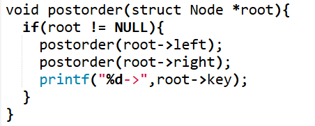

TREES IN DSA
What is a Tree ?
In data structures, a Tree is a popular and efficient way to organize hierarchical data. Unlike linear structures like arrays or linked lists, a tree is made up of nodes connected by edges, forming a parent-child relationship.
The most common real-world example is a file system on a computer, where you have folders (parents) that contain files and other folders (children).

Why we use Trees ?
Trees
Hierarchical Data: Trees are perfect for storing data that has a natural hierarchy, like organization charts or family trees.
Efficient Searching: Certain types of trees, like Binary Search Trees, provide very fast searching of data (logarithmic time complexity).
Efficient Insertion/Deletion: They also provide quicker insertion and deletion operations compared to arrays.
Representing Sorted Data: Trees can be used to naturally represent sorted lists of data.
Core Terminology
To understand trees, you need to know the basic vocabulary associated with them.
Node: The fundamental part of a tree that stores data and may link to other nodes.
Root: The topmost node in a tree. It's the only node that doesn't have a parent. In the diagram above, 'A' is the Root.
Edge: The link or connection between two nodes.
Parent: A node that has child nodes linked to it. 'A' is the parent of 'B' and 'C'.
Child: A node that is linked from a parent node. 'B' and 'C' are children of 'A'.
Siblings: Nodes that share the same parent. 'B' and 'C' are siblings.
Leaf Node: A node that does not have any children. Also called an external node. 'D', 'E', 'F', and 'G' are leaf nodes.
Internal Node: A node that has at least one child. 'A', 'B', and 'C' are internal nodes.
Height of a Tree: The number of edges on the longest path from the root to a leaf node.
Depth of a Node: The number of edges from the root to that node. The depth of the root is 0.
Common Types of Trees
1. Binary Tree (BT) :
A Binary Tree is a special type of tree where each node can have at most two children: a left child and a right child. This is one of the most commonly used trees in DSA.
2. Binary Search Tree (BST): A Binary Search Tree is a binary tree with a specific ordering property that makes searching very efficient.
The value of all nodes in the left subtree of a node is less than or equal to the node's value.
The value of all nodes in the right subtree of a node is greater than the node's value.
Both the left and right subtrees must also be binary search trees.
3. AVL Tree: An AVL Tree is a self-balancing Binary Search Tree. This means it automatically adjusts its structure to keep its height as small as possible, ensuring that operations like search, insert, and delete remain efficient (logarithmic time) even in the worst-case scenario. It achieves this by maintaining a "balance factor" for each node.
4. Red-Black Tree: A Red-Black Tree is another type of self-balancing binary search tree. It maintains its balance by assigning a color—either red or black—to each node in the tree. By enforcing a set of properties, it ensures that the longest path from the root to any leaf is no more than twice as long as the shortest path, keeping the tree roughly balanced.
Rule 1: Every node is either red or black.
Rule 2: The root node is always black.
Rule 3: Every leaf (NIL/null node) is black.
Rule 4: If a node is red, then both of its children are black.
Rule 5: Every simple path from a given node to any of its descendant leaves contains the same number of black nodes.
Tree Traversal
Traversal is the process of visiting (checking or updating) each node in a tree exactly once. Unlike linear data structures, which have a clear beginning and end, trees can be traversed in multiple ways.
Depth-First Search (DFS)
DFS is an algorithm for traversing a tree that explores as far as possible along each branch before backtracking.
1. In-order Traversal (Left, Root, Right)
Visits the left subtree, then the root node, and finally the right subtree. For a BST, this traversal visits the nodes in ascending order.
Result: 3, 5, 8, 10, 20, 25
Code Example:
2. Pre-order Traversal (Root, Left, Right)
Visits the root node first, followed by the left subtree, and then the right subtree. Useful for creating a copy of a tree.
Result: 10, 5, 3, 8, 20, 25
Code Example:
3. Post-order Traversal (Left, Right, Root)
Visits the left subtree, then the right subtree, and finally the root node. Useful for deleting a tree, as you delete children before the parent.
Result: 3, 8, 5, 25, 20, 10
Code Example:

4.Breadth-First Search (BFS) / Level Order Traversal
BFS visits nodes level by level, from top to bottom and left to right. This is typically implemented using a queue.
Result: 10, 5, 20, 3, 8, 25
Code Example:
Real-World Applications of Trees
File Systems: Directories and files are organized in a tree structure.
HTML Documents: The structure of a web page is a tree, with the `` tag as the root.
Databases: B-Trees and T-Trees are used to structure indexes for fast data retrieval.
Artificial Intelligence: Decision trees are used in machine learning. Game AI often uses trees to represent possible moves (e.g., in chess).
Network Routing: Routers use tree-like structures (spanning trees) to find the shortest path for data packets.
Compilers: Syntax trees are used to parse and analyze source code.
Below are the some reference for Deep Learning
1. https://www.geeksforgeeks.org/dsa/tree-data-structure/ GeeksforGeeks
2. https://www.w3schools.com/dsa/dsa_theory_trees.php w3schools
3. https://www.codechef.com/learn/course/trees codechef
4. https://www.freecodecamp.org/news/all-you-need-to-know-about-tree-data-structures-bceacb85490c/ freecodecamp
5. https://www.placementpreparation.io/blog/best-websites-to-practice-data-structures-and-algorithms/ placementpreparation